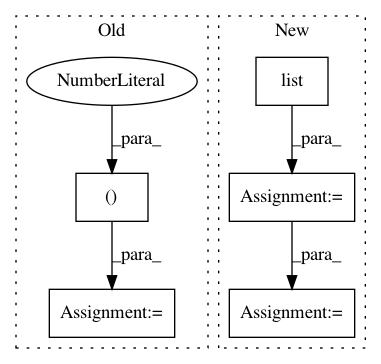

45a10bc6d708fade197a37bfbc62312caf70e6a7,keras/layers/convolutional_recurrent.py,ConvLSTM2D,get_constants,#ConvLSTM2D#Any#Any#,438
Before Change
constants.append([K.cast_to_floatx(1.) for _ in range(4)])
if 0 < self.recurrent_dropout < 1:
ones = K.ones_like(K.reshape(inputs[:, 0, 0], (-1, 1)))
ones = K.tile(ones, (1, self.filters))
def dropped_inputs():
return K.dropout(ones, self.recurrent_dropout)
rec_dp_mask = [K.in_train_phase(dropped_inputs,
After Change
constants.append([K.cast_to_floatx(1.) for _ in range(4)])
if 0 < self.recurrent_dropout < 1:
shape = list(self.kernel_shape)
shape[-1] = self.filters
ones = K.zeros_like(inputs)
ones = K.sum(ones, axis=1)
ones = self.input_conv(ones, K.zeros(shape),
padding=self.padding)
ones += 1.
def dropped_inputs():
return K.dropout(ones, self.recurrent_dropout)
rec_dp_mask = [K.in_train_phase(dropped_inputs,
In pattern: SUPERPATTERN
Frequency: 3
Non-data size: 5
Instances
Project Name: keras-team/keras
Commit Name: 45a10bc6d708fade197a37bfbc62312caf70e6a7
Time: 2017-02-17
Author: francois.chollet@gmail.com
File Name: keras/layers/convolutional_recurrent.py
Class Name: ConvLSTM2D
Method Name: get_constants
Project Name: NifTK/NiftyNet
Commit Name: 984d17836d7a6240942cd44f2f61c92a427bb9bb
Time: 2018-04-24
Author: z.eaton-rosen@ucl.ac.uk
File Name: niftynet/layer/crop.py
Class Name: CropLayer
Method Name: layer_op
Project Name: NifTK/NiftyNet
Commit Name: f9f1242e23bc4ad0433577b81274b9a6065fbb89
Time: 2017-07-13
Author: eli.gibson@gmail.com
File Name: niftynet/utilities/misc_io.py
Class Name:
Method Name: match_volume_shape_to_patch_definition